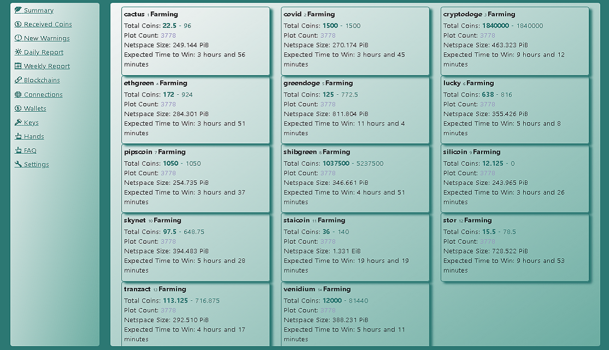
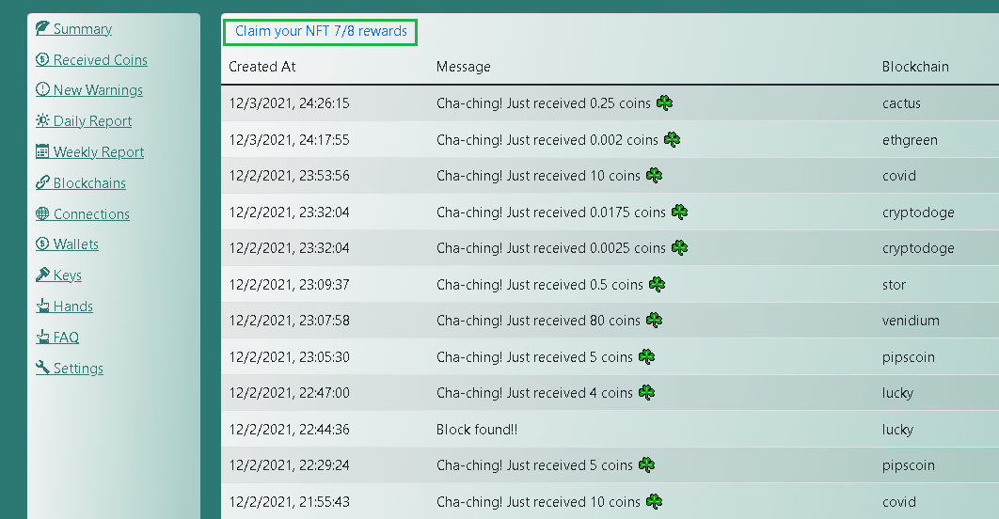
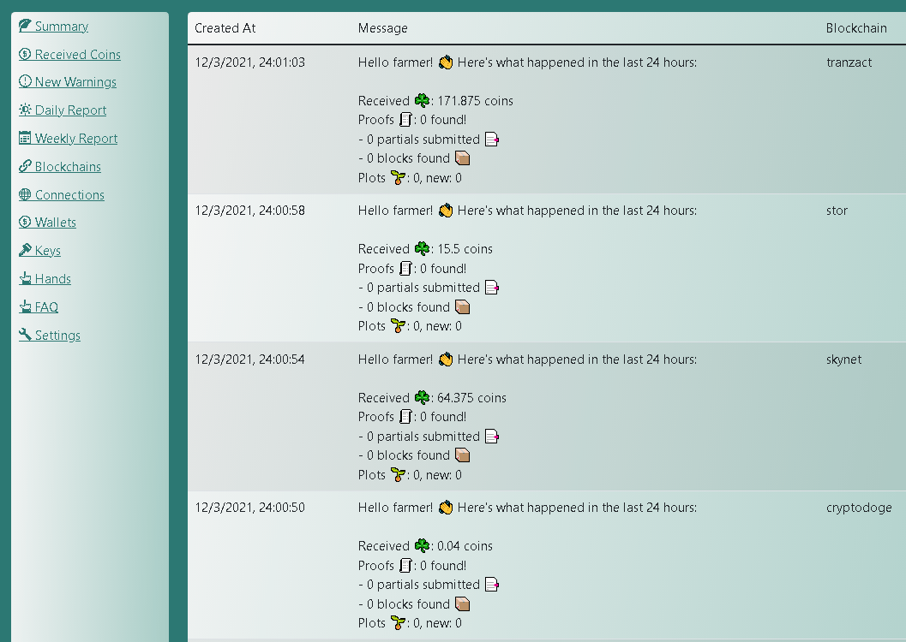
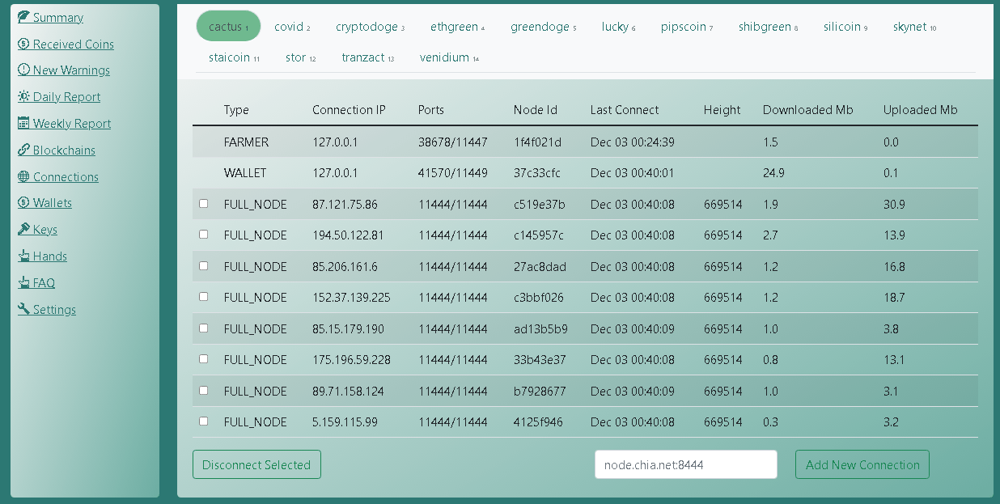
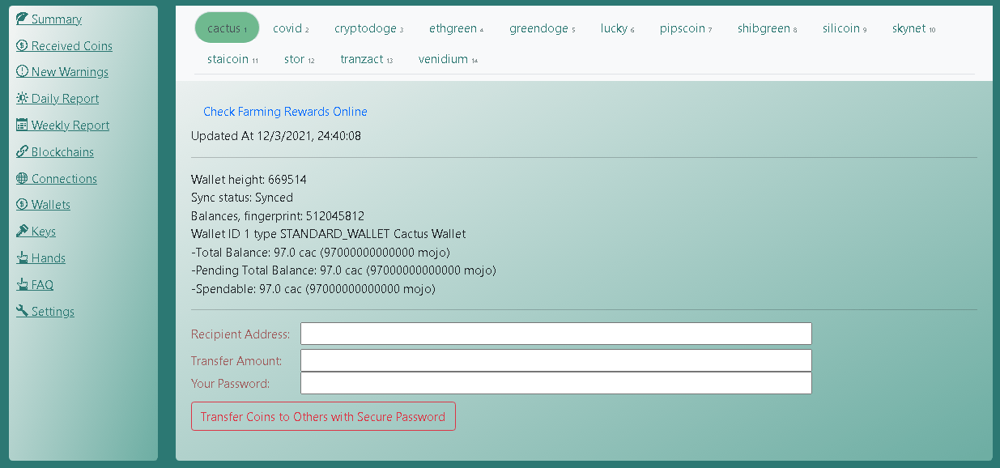
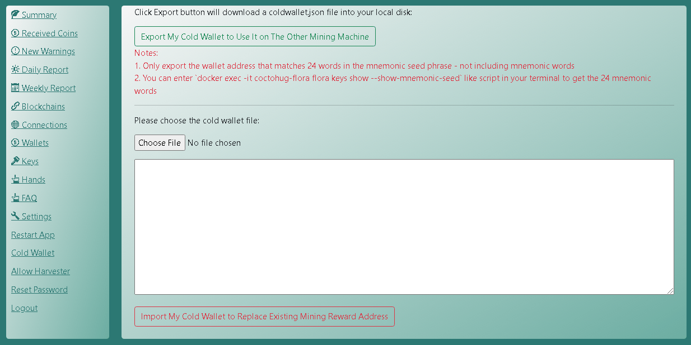

Coctohug - Bir web tarayıcısından düzinelerce chia blockchain çatal madenciliğini yönetin!
- Düzinelerce dil desteğiyle güzel yerelleştirme: English, العربية, Bulgarian, Catalan, Deutsch, Español, زبان فارسی, Français, Galego, Indonesian, Italiano, 日本語, 한국어, Português do Brasil, limba română, Русский, Serbian, Thai, Tagalog (Filipino), Türkçe, Українська, Vietnamese, 简体中文, 繁體中文
Kullanımı Kolay Kurulum Hızlı başlangıç
Bizimle ilgili daha fazla yardım isteyin Website / Github / Discussions / Discord.
Hızlı başlangıç
Genel Ayarlar
Gelişmiş Ayarlar
En İyi Uygulamalar
Linux işletim sisteminde Coctohug'u kurun
- Kurmak Docker + Docker-Compose
- siteye git https://www.coctohug.xyz, ardından gerekli tüm form alanlarını girin ve oluşturulan sıkıştırılmış docker-compose dosyalarını indirin
- İndirilen klasörleri açın ve çalışma dizininize kopyalayın
- Tüm klasörleri sırayla çalıştırın:
cd coctohug0 && docker-compose up -d
cd ../coctohug1 && docker-compose up -d
cd ../coctohug2 && docker-compose up -d
cd ../coctohug3 && docker-compose up -d
...
- Tarayıcıyı açın ve url ile WebUI'ye erişin http://localhost:12630/
- Not 1: Chia blok zinciri çatalları, düğüm senkronizasyonu ilk kez yapıldığında gerçekten CPU yediğinden, aynı anda 5'ten fazla blok zinciri çatalı başlatmayın.
- Not 2: Her blok zinciri çatalı için yaklaşık 1.8G RAM gereklidir, bu nedenle bilgisayar belleğinize göre bazı blok zincir çatalları seçin
- Not 3: Herhangi bir sorun varsa, tüm klasörleri sırayla yeniden çalıştırmanız gerekebilir:
cd coctohug0 && docker-compose up -d
cd ../coctohug1 && docker-compose up -d
cd ../coctohug2 && docker-compose up -d
cd ../coctohug3 && docker-compose up -d
...
- Not 4: Sistem güvenlik duvarı ayarlarınıza 12630'dan 12700'e kadar izin verilen bağlantı noktaları eklemeniz gerekebilir.
Windows işletim sisteminde Coctohug'u kurun
Mac OS'de Coctohug'u Kurma
Parola
- URL ile WebUI'ye ilk kez eriştiğinizde, güvenli ayarlar için bir parola belirlemeniz istenecektir. http://localhost:12630/
- Güvenli ayarlar şunları içerir: Cold Wallet, Coin Transfer, Restart Blockchain Forks, Harvester...
Anahtarlar
- URL ile WebUI'ye ilk kez eriştiğinizde, 24 anımsatıcı kelimeyi girmeniz istenecektir - bu esas olarak çiftçilik amaçlıdır
- Veya tamamen yeni bir anahtar oluşturabilirsiniz - bu esas olarak soğuk cüzdan amaçlıdır
madencilik
- Düğüm senkronizasyonu yapıldığında, çiftçilik otomatik olarak başlamalıdır
- Ardından madencilik durumunu çeşitli yollarla izleyebileceksiniz.

izleme
- Özet sekmesi şunları gösterebilir: Toplam Maden Paraları, Hesap Bakiyesi, Arsa Sayısı, Arsa Boyutu, Netspace Boyutu ve Beklenen Kazanma Süresi
- Özet sekmesindeki her blok zinciri çatal paneli, düzgün çalışıyorsa açık yeşil bir arka plana sahip olacaktır, aksi takdirde açık sarı arka plana sahip olacaktır.
- Detayları diğer sekmeleri kullanarak da inceleyebilirsiniz.
NFT Kurtarma
Bulunan Bloklar / Alınan Paralar
- Bulunan toplam blokları listele
- Alınan toplam paraları listele

Madencilik Uyarıları
- Olası ağ sorununu listeleyin
- Olası işaret noktası sorununu listeleyin
- Olası disk arama sorununu listeleyin
- Olası arsa sayısı azalan sorunu listeleyin
Günlük rapor
- Bulunan Blokları / Güne Göre Alınan Paraları Özetle
- Madencilik Uyarılarını güne göre özetleyin

Haftalık rapor
- Bulunan Blokları / Haftaya Göre Alınan Paraları Özetle
- Madencilik Uyarılarını Haftaya Göre Özetleyin
Düğüm Senkronizasyonu
- Düğüm varsayılan olarak otomatik olarak eşitlenir
- Ayrıntılı durumu incelemek için Bağlantılar veya Blokajlar sekmesine gidebilirsiniz.
- Düğüm senkronizasyonunuzu hızlandırmak için, https://alltheblocks.net/ düğüm listesi ve veritabanı dosyası sağlar (her blok zincirine tıklayın ve ardından bunları sağ üst bölümde bulabilirsiniz)
Bağlantı Yönetimi
- Tüm düğüm bağlantılarını listele
- Bağlantılar sekmesinde bağlantı ekleyebilir/kaldırabilirsiniz

Cüzdan Yönetimi
- Cüzdan durumunu ve hesap bakiyesini listeleyin
- Paraları cüzdan sekmesinden de aktarabilirsiniz.

El Yönetimi
- Bu, her bir blockchain çatal işçisi
- Artık çiftlik yapmayı planlamadığınızda bir elinizi kaldırabilirsiniz.
Para Transferi
- Cüzdan sekmesine gidin ve madeni paraları aktarmak için güvenli şifrenizi girin
Soğuk Cüzdan
- Güvenli şifrenizle ayarlar sekmesine gidin
- Soğuk Cüzdan Hesabını Dışa Aktar
1. Yeni bir makine hazırlayın (madencilik makinesinden farklı)
2. Ziyaret https://www.coctohug.xyz ve docker-compose klasörleri oluşturmak için Cüzdan Modu'nu tıklayın
3. Docker-compose klasörlerini kurun [Linux işletim sisteminde Coctohug'u kurun]
4. WebUI başlatma ekranında bu sefer yeni bir anahtar oluşturun
5. Blockchain çatallarının yeniden başlatılması için birkaç dakika bekleyin
6. Her klasöre gidin ve komut dosyasını yürütün docker-compose stop && docker-compose up -d
7. Ziyaret http://localhost:12630/, ve soğuk cüzdan adreslerini dışa aktarmak için ayarlar - soğuk cüzdan sekmesine gidin
8. İndirilen dosyayı Anahtarlar sekmesinde gösterilen bilgilerle karşılaştırarak her adresin manuel olarak doğru olduğunu onaylayın.
9. Benzer terminal komut dosyasıyla 24 anımsatıcı kelime alın
docker exec -it coctohug-flora flora keys show --show-mnemonic-seed
docker exec -it coctohug-covid covid keys show --show-mnemonic-seed
docker exec -it coctohug-lucky lucky keys show --show-mnemonic-seed
- Soğuk Cüzdan Hesabını İçe Aktar
1. Madencilik makinenizde ayarlar - soğuk cüzdan sekmesini ziyaret edin
2. Daha önce indirilen soğuk cüzdan json dosyasını içe aktarın
3. Birkaç dakika bekleyin ve soğuk cüzdan adresinin güncellenip güncellenmediğini görmek için cüzdan sekmesine gidin.
4. Not: İçe aktarmadan önce cüzdan yapılandırmalarınızı yedeklemenizi öneririz.

Güvenli Parolalı 24 Anımsatıcı Söz
- coctohug-passphrase 24 anımsatıcı kelimenizi güvenceye almak için kullanılabilir
- Anahtarlarınızı yalnızca sizin bildiğiniz bir parola ile şifreler
- Yeni blockchain çatalları eklerken şifre ile şifresini çözebilirsiniz.
Blockchain Çatalları
- Coctohug github'ı birkaç günde bir kontrol edin
- Yeni blockchain çatalları çok yakında desteklenecek
biçerdöver
Güncelleme
- Tek satırlık komut dosyası
docker-compose stop && docker-compose rm -f && docker-compose pull && docker-compose up -d --force-recreate
- Ayrıca yukarıdaki komut dosyalarını adım adım çalıştırabilirsiniz.
docker-compose stop
docker-compose rm -f
docker-compose pull
docker-compose up -d --force-recreate
- Uyumsuz db sorunu olması durumunda, docker-compose başlatma komut dosyasını çalıştırmadan önce mevcut veritabanı dosyasını şu şekilde kaldırabilirsiniz:
rm ~/.coctohug-web/db/coctohug.sqlite
Yerel dil
- WebUI'nin sağ üst köşesinde, en çok beğendiğiniz dili seçin
- Dilerseniz daha sonra başka dillere geçebilirsiniz.
Donanım Gereksinimleri
- Senkronize edildikten sonra, 10. Nesil Intel® Core™ i7 İşlemciler, 50'den fazla blok zinciri çatalı oluşturmak için yeterli olacaktır.
- Ancak ilk düğüm senkronizasyon aşaması için gerçekten CPU yiyor. Bu nedenle, grup başına 5 blok zinciri çatalı kurmanızı ve gruplara göre grup başlatmanızı öneririz.
- Gerekli bellek şuna eşittir: madencilik blok zinciri çatallarının sayısı 1.8G RAM ile çarpılır
- 50'den fazla blockchain çatalı için normal disk iyi olmalıdır
Github'da Açık Kaynak Projeleri
webui
cactus
covid
cryptodoge
ethgreen
flora
greendoge
lucky pipscoin
shibgreen
silicoin
skynet staicoin
stor
tranzact
venidium
Ticari Marka Bildirimi
CHIA NETWORK INC, CHIA™, CHIA BLACKCHAIN™, CHIA PROTOCOL™, CHIALISP™ ve “yaprak Logosu” (Chia'ya atıfta bulunduğunda veya Chia'yı gösterdiğinde yalnızca yaprak logosu dahil), Chia Network, Inc'in ticari markaları veya tescilli ticari markalarıdır. ., bir Delaware şirketi. Bu Coctohug projesi ile ana Chia Network projesi arasında herhangi bir bağlantı yoktur.